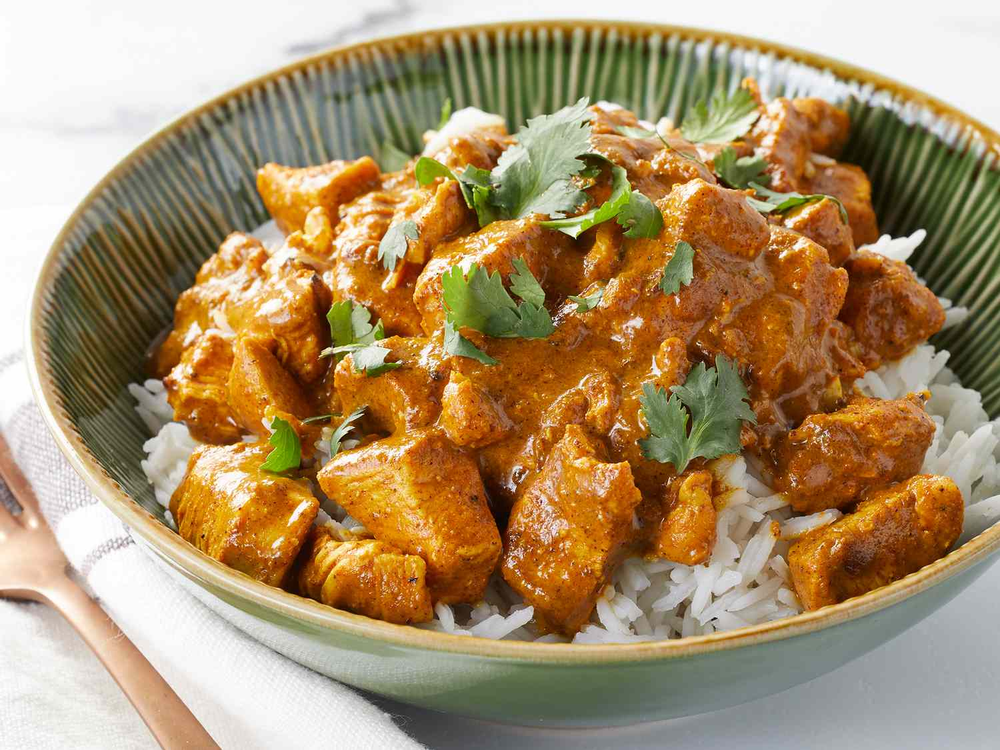
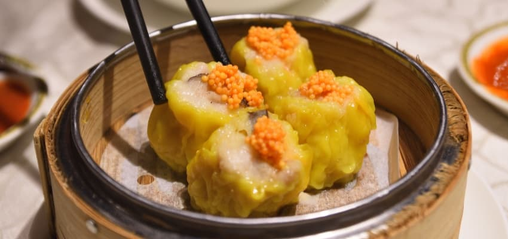

Explore Our Signature Dishes
- Sushi
 >
>
Freshly prepared sushi, made with premium cuts of fish and served with a touch of wasabi.- Chicken Curry
- >
A comforting blend of slow-cooked chicken, aromatic spices, and creamy coconut milk. - Noodles
 >
>
Stir-fried noodles with tender shrimp, crisp vegetables, and a tangy tamarind sauce.- Dim Sum
- >
Steamed or pan-fried dumplings filled with pork, shrimp, and fresh herbs. - Ramen
 >
>
A bowl of warmth—slow-simmered broth, handmade noodles, and melt-in-your-mouth pork slices.- Fried Rice
 >
>
Fluffy rice stir-fried with fresh vegetables, eggs, and your choice of protein.